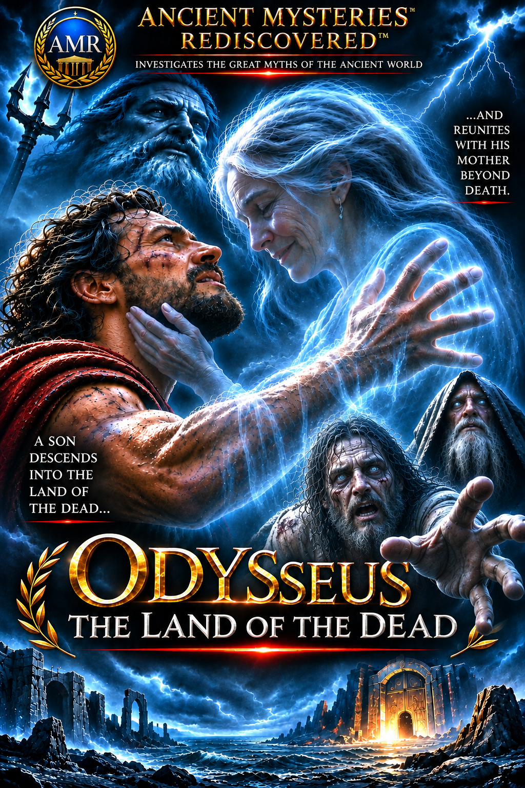

Skip to film library
AMR
AMR Cinema
Ancient Mysteries Rediscovered
Menu
Film Library
AMR Home
AMR Cinema library
Explore More AMR Videos
Select a film to open its viewing page.

▶
Newest release · 1 min 6 sec
Odysseus — The Land of the Dead
Watch film →
▶
AMR Original · 26 seconds
Enuk: The Wildman
Watch film →
▶
AMR Original · 34 seconds
The Laestrygonians
Watch film →